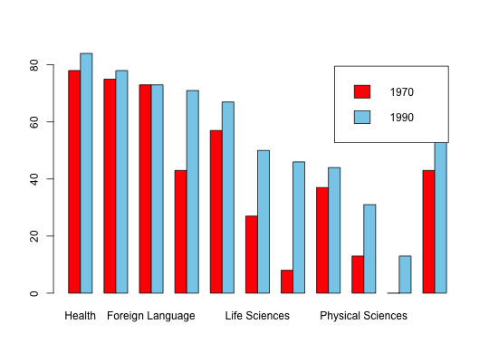

Data for Exercise 2.75
A data frame with 11 observations on the following 3 variables.
All fields
Business Education Engineering Fine Arts
Foreign Lng Health Life Sciences Physical Sci
Psychology Social ScienceKitchens, L. J. (2003) Basic Statistics and Data Analysis. Duxbury
str(Degree)#> 'data.frame': 11 obs. of 3 variables: #> $ Field: Factor w/ 11 levels "All fields","Business",..: 7 3 6 10 5 8 2 11 9 4 ... #> $ X1970: num 78 75 73.4 43.3 57.3 27.8 8.7 37.1 13.6 0.7 ... #> $ X1990: num 84.3 78.1 73.4 71.5 67.5 50.7 46.7 44.2 31.2 13.8 ... #>attach(Degree) Dmat <- as.matrix(Degree[,2:3]) rownames(Dmat) <- Field colnames(Dmat) <- c("1970","1990") Dmat#> 1970 1990 #> Health 78.0 84.3 #> Education 75.0 78.1 #> Foreign Lng 73.4 73.4 #> Psychology 43.3 71.5 #> Fine Arts 57.3 67.5 #> Life Sciences 27.8 50.7 #> Business 8.7 46.7 #> Social Science 37.1 44.2 #> Physical Sci 13.6 31.2 #> Engineering 0.7 13.8 #> All fields 43.1 53.2 #>barplot(t(Dmat),beside=TRUE,legend=TRUE,cex.names=.5)detach(Degree) remove(Dmat)